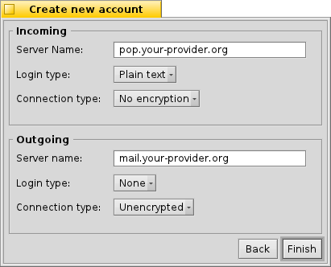
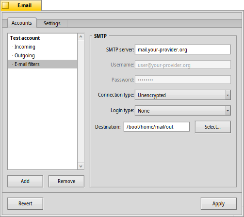
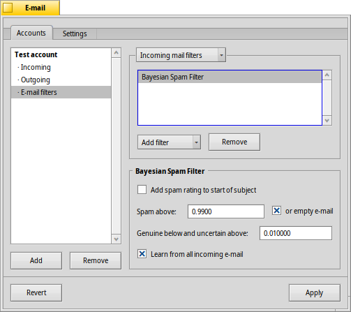
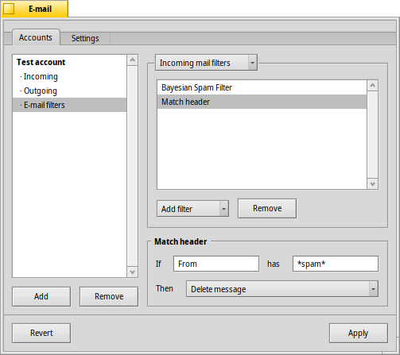
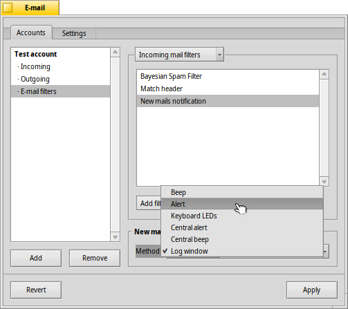
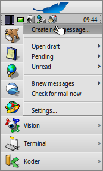

日本語
日本語 Français
Français Deutsch
Deutsch Italiano
Italiano Русский
Русский Español
Español Svenska
Svenska Українська
Українська 中文 ［中文］
中文 ［中文］ Português
Português Suomi
Suomi Slovenčina
Slovenčina English
English| インデックス |
|
新しい電子メールアカウントの作成 アカウントの設定 受信の設定 送信の設定 電子メールフィルタの設定 メールサービスの設定 |
 メール (E-mail)
メール (E-mail)
| Deskbar メニュー: | ||
| 場所: | /boot/system/preferences/E-mail | |
| 設定ファイル: | ~/config/settings/Mail/* |
Haiku は、メールサービス (mail_daemon) を通じ定期的に電子メールを取得して、メールごとに単一のテキストファイルに保存するシステムを提供します。システムはメールを解析して、差出人、宛先、題名、未読 (既読) といった必要なすべてのヘッダ情報で属性を設定します。処理は直接あるいは各アプリケーションから要求できます。また、このシステムはすべてのデータと構成を保ちつつ電子メールクライアントを切り替えることを容易にします。
構成は電子メール設定パネルで行います。
 新しい電子メールアカウントの作成
新しい電子メールアカウントの作成
電子メールアカウントの設定手順を追っていきましょう。
新しく無名のアカウントを作るために、まず ボタンをクリックします。すると、アカウント情報を入力するパネルが開きます:

最初に、メールを取得する方法として、 か を選びます。
それから、E-mail アドレス (E-mail Address)、ログイン名 (Login Name)、パスワード (Password) を入力して、Haiku 内で用いられるアカウント名(Account Name) と本名 (Real Name) も決めてください。
メジャーな電子メールプロバイダーを利用している場合、Haiku はすでにサーバの IP アドレスのような技術項目をすべて理解しています。それ以外の場合は、 をクリックすると、手でこの情報を入力するためのウィンドウが開きます。
まず、受信メールの サーバ名 (Server name)、認証方法 (Login type)、および接続タイプ (Connection type) を設定します。その下は、送信メールの設定です。ユーザーの電子メールプロバイダーのウェブサイトで、必要な情報は得られるはずです。
各種設定や追加の設定について詳しくは以下を見てください。
アカウント設定
左側のリスト中のアカウント名を選ぶと、いくつかの全般設定を変更できます。

アカウント名 は、たとえば、E-mail 設定のアカウントリストに表示される名前です。実名は、ユーザーからのメールを受信した人が見る名前です。返信先アドレスは、ユーザーからのメールに返信するときに用いられる電子メールアドレスです。通常は、送信元のアドレスと同じになります。
もし、アカウントを送信電用、または受信専用にするなら、左側のアカウント名を右クリックして、それに応じてチェックマークをセットすることで、機能を無効・有効にできます。
受信の追加設定
どのように電子メールを受信するか設定するには、アカウント名の下にある をクリックします。

最初は、受信メールの アドレスです。もし、プロバイダーが特定のポートへのログインを必要とするなら、コロンで区切ってアドレスに追加できます。例: pop.your-provider.org:1400.
次に、ログイン情報として、ログイン名 (Login name)、および パスワード (Password) を入力してください。必要なら、認証方法 (Login type) をデフォルトの から に変更してください。
もし POP3 を使っていて、このアカウントのメールを複数のコンピューターで取得するなら、 オプションを有効にして、ローカルのみで を行うとよいでしょう。
もし代わりに IMAP を使っているならば、 locally オプションが利用できます。また、同期するフォルダーを、 (最上層の受信箱フォルダー) から指定したフォルダーとそのサブフォルダーに変更できます。
同様に、指定したサイズより大きいメールについて、(部分的にメッセージをダウンロード) するよう設定することもできます。これはヘッダのみを取得するので、題名と差出人を見た後でメッセージの続きと有効な添付ファイルをダウンロードするか決めることができます。低速な接続回線を利用している場合に便利です。
受信箱の Destination (場所) を変更できます(デフォルト: /boot/home/mail/in/)。これは、異なるアカウントのメールを独自のフォルダーに分けたい場合に便利ですが、クエリでも同様の整理が可能です。
送信の追加設定
どのように電子メールを送信するか設定するには、アカウント名の下にある をクリックします。
最初に、送信メールの SMTP Server (SMTP サーバー) アドレスを設定します。先の受信サーバと同様、必要に応じて特定のポートを指定できます (例 mail.your-provider.org:1200)。
ログインする必要があれば、Login Type (ログインの種類) を に変更しユーザー名とパスワードを入力します。もうひとつは、プロバイダーがメール確認時に認証のため を要求する場合に用いられます。
受信メールと同様に、送信箱の Destination (場所) を変更できます。(デフォルト: /boot/home/mail/out/)
通知とその他の電子メールフィルター
新着メールの通知および、メールの並び替え、フィルターについては、アカウント名の下の で見つかります。互いに適用するフィルターをいくらでも追加でき、それらをドラッグ＆ドロップで新しい場所に再配置できます。
今のところ、3 種類の を追加できます。フィルターを追加したら、オプションを理解するためにそれを選択してください。
スパムフィルター (AGMS ベイジアン)

スパムフィルタは不要なスパムの判定に統計的手法を利用します。メールには 0 から 1 の評価値が付与され、ユーザーはスパムと通常のメールとの境界値を決めることができます。
評価値を受信メールの題名の先頭に追加することが可能です。
また、スパムフィルタはすべての受信メールから学習できます。もちろん、誤ってスパム判定されている偽陽性のメールを仕分けて、スパムフィルタに学習させなくてはいけません。メールアプリケーションについての説明で詳しく知ることができるでしょう。
(ルールフィルター) と併用することで、検出されたスパムメールを自動的に整理できます。
ルールフィルター

このフィルタはメールヘッダと検索パターンを比較し、一致した際に処理します。
最初のテキストフィールドには対象のヘッダを指定します。以下のヘッダが指定できます:
| 差出人の名前 | ||
| 差出人の電子メールアドレス | ||
| (宛先) | あなたの電子メールアドレス(アカウントによって異なります) | |
| 返信先の電子メールアドレス | ||
| メールが受信された日時 | ||
| メールの題名 | ||
| メールの複製 (Cc) を受信するアドレスの一覧 | ||
| 電子メールアカウントの名前 | ||
| 電子メールのステータスを表します。通常は"Read (来読)"、"Replied (返信済み)"、"Sent (送信済み)"、"Forwarded (転送済み)"、"New (新規)"、または自分自身で定義したものです。ただし、フィルタでここを変更しても、Mail サービスがメールを取得した後は常に "New (新規)" が適用されています。 | ||
| (優先度) | 差出人の電子メールプログラム側で設定されます。(例 "urgent(緊急)") | |
| 基本的に "Subject" と同じですが、Re: や Fwd: といった文字列が除かれます。 | ||
| (分類グループ) | スパムフィルタの判定に依存して、空白 (不確かな場合) か、あるいは "Genue( 本物)" か "Spam (スパム)" の文字列を含みます。 | |
| (評価値) | これはスパムフィルタが電子メールに付加する評価の数値です。これは科学的記法で表記され、たとえば、1.065e-12 は 1.065 を 10 の 12 乗で割った 0.000000000001065 を意味します。 |
2 番目のテキストフィールドには検索パターンを入力します。ここでは、regular expression (正規表現) が利用可能で、多少複雑になる場合があるものの高い柔軟性を提供しています。リンク先を少し読めば、正規表現を利用する価値が充分にあり、また単純な検索パターンに関してはまったく複雑にならないことがわかるでしょう。
その下のポップアップメニューで、パターンが一致した際の処理を選択します。メールの移動や削除、"Read (既読)" などメールのステータス変更、返信に用いる電子メールアドレスの設定ができます。
新着メールの通知

新着メールの通知は、いくつかの方法が選べます。 メニューでいくつかのオプションが見つかります。それらは、さらに組み合わせて利用できます。
| 通知しない | ||
| すべての新着メールにつきサウンド設定で設定したサウンドファイルを再生 | ||
| すべての新着メッセージにつき警告ウィンドウを表示 | ||
| CapsLock キーのような、キーボードの LED を点滅 | ||
| 新着メッセージにつき警告ウィンドウをひとつ表示 | ||
| サウンド 設定で設定した新着メッセージ用のサウンドファイルを一度 再生 | ||
| ログウィンドウを表示 |
送信メールフィルタ
送信メールに適用できるフィルタはたったひとつです: fortune (占い)。
このフィルタは送信するメールが送られる前に、その末尾にランダムに選ばれた愉快な (あるいは賢い) "fortune cookie" を付け加えます。これはターミナルで fortune コマンドを実行することで試すことができます。
メールサービスの設定
受信および送信メールサーバの設定が (おそらくフィルターの設定も) 完了したので、実際の確認と取得のすべてを行うメールサービスに、ジョブをどのように行うか知らせる必要があります。
メールチェック (Mail Checking) で アカウントのメールサーバに新着メールの問い合わせを行う間隔を指定します。
ダイヤルアップ接続を利用している場合、メールチェックのためだけに自動でダイヤルしてしまうのを防ぐため と を有効にするとよいでしょう。
メールサービスでは、ステータスウィンドウの表示を、、、 から選択できます。
が無効だと処理を実行する mail_daemon が起動していないので、有効であるかしっかり確かめてください。
は、/boot/home/config/Mail/Menu Links/ フォルダーを開きます。この中に格納されたすべてのフォルダーやクエリ、またそれらのリンクが、Deskbar トレイのメールサービスにあるメールボックスアイコンのコンテキストメニューに表示されます。
メニューからは、、 、 といった操作ができます。
SHIFT を押しながらメニューを開くと、次のコマンドも表示されます。
| ひとつのアカウントのメッセージをチェックするためのサブメニューを開きます。 | ||
| 新規メールをチェックせずにメッセージを送ることができます。 | ||
| メールサービスを終了します。 |
メールボックスアイコンは、未読メッセージ ("New (新規)" ステータス) がある場合に中に封筒マークを表示します。